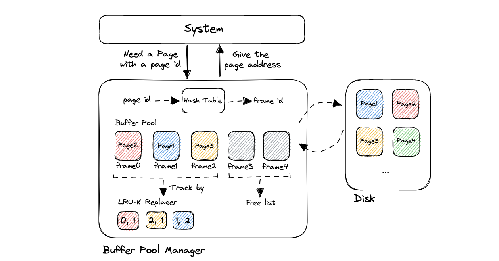
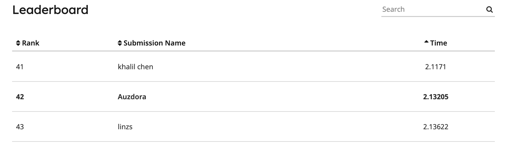

CMU 15-445 Buffer Pool Manager
Buffer Pool Manager Instance这个Task本质而言就是理解清楚Extendible Hash Table和LRU-K Replacer的关系，然后将它们组合起来。实现的难度并不高，只要按照注释内容好好分析，然后按逻辑写下来就可以。重点在于每一个操作的细节问题，细节问题很多，要时刻注意。
Buffer Pool Manager Mechanism
想要实现Buffer Pool Manager，我们就要在high-level的角度理解一下Buffer Pool Manager在系统中的作用。先看下图：

站在System的角度看，System会向Buffer Pool Manager发送一个请求，指定一个page id，Buffer Pool Manager返回这个page在内存中的地址（或者新建一个page）。仅此而已，系统只需要关心要那个page，并等待Buffer Pool Manager返回即可。
接下来我们去BPM内部看一下。当System想要Fetch一个page时，为了快速在内存中找到指定page id的位置，这里用了Extendible Hash Table。根据之前实现的Hash Table，执行Find操作，将对应的位置，也就是frame id查询出来（因为Buffer Pool Manager在内存中创建page slot的时候是以数组的形式创建的，因此frame id对应的就是数组的下标索引）。接着我们可以在内存中找到，并返回page的地址即可。
如果Fetch操作在哈希表中没找到对应的frame id，说明内存中并不存在这个page。接下来做的操作，就是想从Disk中将对应page的数据copy进来，同时在内存中给它找到一席之地。
从上图的Buffer Pool中可以看到，内存中灰色的page表示的是当前没有存放page的内存块。因此想从Disk中复制数据进来时，我们就可以先看看Free List中有无空闲的空间。如果有，就采用这个对应的frame id。如果没有，说明内存中所有的page全都放满了，那么就需要从LRU-K Replacer中，选取一个适合驱逐的内存块驱逐它，留出位置给从Disk copy的page使用。
Buffer Pool Manager Instance Implementation
相关文件夹提供了API及其注释，分别有NewPgImp、FetchPgImp、UnpinPgImp、FlushPgImp、FlushAllPgsImp以及DeletePgImp需要我们实现。相关实现需要注意的地方注释中写的很清晰，当然还有很多细节部分注释中并没有标注出来。比如哈希表的增加和删除的时机、pin
count增加的时机等等，这些都是需要自己去debug过程中发现代码漏洞而去补全的。
这里主要说明一下数据结构部分。pages_是一个page数组的首地址，既然是数组，那说明它们的内存空间是连续的，而且支持随机查找。pages_的索引就是frame
id，表明这是buffer
pool中第几个slot。disk_manager_我们只需要用到其中的WritePage和ReadPage的API即可。page_table_实现的是page
id到frame id的映射关系，使得对指定page
id的查找时间复杂度从O(N)降到了O(1)。使用这个数据结构的时候，要注意删除一个page时随即删除page_table_的相关记录，不然之后会导致读到的page的内容是不同page
id内容的情况。replacer_的作用是，如果当前buffer
pool全部满了，提供一个可驱逐的frame id号，buffer pool
manager会根据这个frame
id对这块内存进行驱逐，再把想要的page从Disk拷贝到这块内存中。
关于线程安全，我还是一把大锁锁住所有，尝试过优化，但并没有明显的效果。Leaderboard的结果在2.1s左右。希望各位大佬能对优化方案提供一些建议。
附一张截图：

踩坑记录
FlushPgImp并不是要将指定page重写回disk并刷新这块内存空间的意思，单纯就是为了将这page写会Disk刷新一下，不改变其在内存中的状态。FlushAllPgsImp同理。- 每次
FetchPgImp，就要增加指定page中的pin count。 - Evict和Remove一个page之后，不要忘记
ResetMemory。